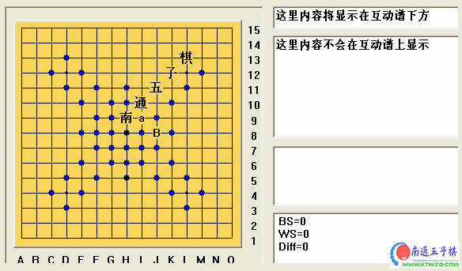
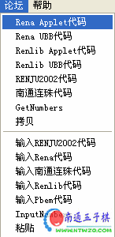

爱五子棋打谱软件使用方法介绍
#1 爱五子棋打谱软件使用方法介绍 作者：有志青年 发表时间：2006-11-25 21:56:01
爱五子棋打谱软件2.2版本发布，可计算VCF，免杀 ShowPost.asp?ThreadID=15963
爱五子棋打谱软件2.2实用使用说明 ShowPost.asp?ThreadID=16011
改进的爱五子棋打谱软件（2.1版本）
ShowPost.asp?ThreadID=7834
这个帖子专门介绍如何使用爱五子棋打谱软件
2楼基本使用方法
3楼如何发互动谱到网络上
4楼如何保存网上的互动谱到本地
5楼如何保存分支
［此帖子已被 有志青年 在 2010-9-28 23:12:51 编辑过］
［此帖子已被 有志青年 在 2011-10-31 11:14:43 编辑过］
［此帖子已被 有志青年 在 2011-11-3 20:07:09 编辑过］
#2 基本使用方法 作者：有志青年 发表时间：2006-11-25 21:57:16
落子：
在打谱软件中通过鼠标点击落子
加/删注释：
如果需要在某个点上加上或者删除注释文字，可以按住ctrl键再点击鼠标左键。注意：注释一般为一个汉字或字母
删除落子：
直接按键盘上的del键。
合并棋谱：
如果多，可以将需要合并的棋谱放到同一个文件夹中，然后运行打谱软件，选择文件菜单下的“合并文件夹里的文件”
如果少，可以直接选择合并文件，合并单个文件。
如何让黑石帮助计算局面：
选择文件菜单下的另存为，选择保存的格式为pos。用黑石打开刚刚保存的文件就可以了。
请注意，如果你的棋谱有分支，而你在退出之前没有再次保存的话，默认就是pos格式，是没有分支的，所以，你退出棋谱之前还需要另存为lib格式的棋谱。
如何将南通五子棋慢棋对局保存到本地
到南通五子棋慢棋系统中复制棋谱信息
打开软件，选择“论坛，输入南通连珠代码”
如何察看浙江和ORC教室讲课内容
直接打开
#3 如何发布互动棋谱 作者：有志青年 发表时间：2006-11-25 21:58:22
第一步下载：
“南通五子棋”打谱软件，地址：爱五子棋打谱软件2.2版本发布，可计算VCF，免杀
第二步打谱：
在打谱软件中通过鼠标点击落子，如果需要在某个点上加上注释文字，如图中的“a、B、南通五子棋”等字样，可以按住ctrl键再点击鼠标左键。

南通五子棋打谱软件生成的代码是多分支的，你在南通五子棋网站看到的那些定式谱就是。
第三步生成代码：
点击论坛菜单，选择第二个子菜单“rena ubb代码”

第四步发布棋谱：
到论坛中发布帖子，粘贴刚才生成的代码〔ctrl+v〕，或者发布窗口点击鼠标右键选择粘贴，这样就可以发布了，如果你还想配一些说明文字，可以在打谱时写上注释，也就是右边第一个输入框，这样会在生成的互动谱下方显示说明文字，这样说明文字永远跟随棋谱一起走了；也可以在发布互动谱后面加说明文字。
［此帖子已被 有志青年 在 2011-10-31 11:14:06 编辑过］
#4 如何保存分支 作者：有志青年 发表时间：2006-11-25 22:01:44
1、选择你想要的分支，
2、点击菜单“论坛”生成rena applet代码，
3、新建空白棋谱
4、点击菜单“论坛”输入rena代码
5、保存就可以了。
#5 Re:南通五子棋打谱软件使用方法介绍 作者：有志青年 发表时间：2006-11-25 22:10:19
预留位置一
在使用南通五子棋打谱软件的过程中有什么问题请您跟贴提问。
#6 Re:南通五子棋打谱软件使用方法介绍 作者：有志青年 发表时间：2006-11-25 22:10:47
预留位置二
在使用南通五子棋打谱软件的过程中有什么问题请您跟贴提问。
#7 Re:南通五子棋打谱软件使用方法介绍 作者：870122 发表时间：2006-12-21 1:44:51
8cuo
#8 Re:南通五子棋打谱软件使用方法介绍 作者：柔一剑 发表时间：2007-1-8 8:47:46
怎么样下载呢?
#9 Re:南通五子棋打谱软件使用方法介绍 作者：mszxp 发表时间：2007-1-10 13:52:34
软件要注册？
#10 Re:南通五子棋打谱软件使用方法介绍 作者：有志青年 发表时间：2007-2-3 16:10:20
此软件不需要注册，是特供南通五子棋网站使用的版本。没有功能限制！
#11 Re:南通五子棋打谱软件使用方法介绍 作者：aeolus 发表时间：2007-4-3 15:32:36
顶一个，看看#12 Re:南通五子棋打谱软件使用方法介绍 作者：billli 发表时间：2007-4-15 18:57:13
最近发现名为renjusolvertest的软件，里面的界面和这个软件一模一样，只是多了计算VCT的功能，问下版主可否参考添加该功能，方便打谱时便于计算。
#13 Re:Re:南通五子棋打谱软件使用方法介绍 作者：有志青年 发表时间：2007-4-15 19:06:17
引用：
原文由 billli 发表于 2007-4-15 18:57:13 :最近发现名为renjusolvertest的软件，里面的界面和这个软件一模一样，只是多了计算VCT的功能，问下版主可否参考添加该功能，方便打谱时便于计算。
有vct等功能的版本是注册版，这里提供的软件是仅保留打谱功能的版本。
#14 Re:南通五子棋打谱软件使用方法介绍 作者：csy73 发表时间：2007-5-27 8:46:47
为啥经常无故自动关闭呀?郁闷......你们的有这情况吗?#15 Re:Re:南通五子棋打谱软件使用方法介绍 作者：黄药师 发表时间：2007-7-12 16:00:04
引用：原来的版本有这个问题，现在新上传的是没有的！你重新下载了试试！
原文由 csy73 发表于 2007-5-27 8:46:47 :
为啥经常无故自动关闭呀?郁闷......你们的有这情况吗?
#16 Re:爱五子棋打谱软件使用方法介绍 作者：越狱行辕 发表时间：2008-6-2 15:46:43
有点不是很好的地方 就是他太会整和一样的点 比如斜指和直指两种开局。如果棋谱较多的话，他会显示很多点，其实就两种 合并的功能牛！
#17 Re:爱五子棋打谱软件使用方法介绍 作者：先期 发表时间：2008-6-6 15:58:16
明白一些了，但第三步和第四步的图片是什么啊？［ 有志青年 于 2008-6-6 16:23:33 时奖励此帖[金币加 20 威望加1］
已修复
#18 Re:Re:南通五子棋打谱软件使用方法介绍 作者：隐藏菜系 发表时间：2008-7-29 14:53:12
请教有志~
我有时会遇到这样一种情况:假设我有A和B两个棋谱,我先打开A,然后通过"合并文件"将B合并进去,结果发现合并后的文件C的大小反而比A小;如果将A和B调换顺序,合并后的文件D的大小与C不一样,请问这是什么原因?还有,我想知道合并之后文件的注释是怎么选择的? 谢谢了!
谢谢了!
#19 Re:爱五子棋打谱软件使用方法介绍 作者：云在青天水在瓶 发表时间：2008-7-29 15:40:30
很不错，还不太明白#20 Re:爱五子棋打谱软件使用方法介绍 作者：云在青天水在瓶 发表时间：2008-7-29 15:43:09

怎么得到代码
#21 Re:爱五子棋打谱软件使用方法介绍 作者：不知 发表时间：2008-9-1 22:58:11
 有志我找完都不见软件上有合并文件啊，发个截图看看在哪啊
有志我找完都不见软件上有合并文件啊，发个截图看看在哪啊
#22 Re:Re:爱五子棋打谱软件使用方法介绍 作者：有志青年 发表时间：2008-9-2 7:16:34
文件菜单下有呀
#23 Re:爱五子棋打谱软件使用方法介绍 作者：香雪美景 发表时间：2008-9-2 14:09:29
看 不明白,什么是打谱软件啊?#24 Re:爱五子棋打谱软件使用方法介绍 作者：阿华 发表时间：2008-9-28 9:59:14
老师，怎么我保存的网页上的互动棋谱，却只有一个分枝的步骤呢？不象网上互动棋谱那么多分枝的#25 Re:爱五子棋打谱软件使用方法介绍 作者：星弈 发表时间：2009-2-28 16:11:19
我怎么按del键还是删不掉落子呢？#26 Re:爱五子棋打谱软件使用方法介绍 作者：野比伸太 发表时间：2009-3-5 22:49:59
#27 Re:爱五子棋打谱软件使用方法介绍 作者：决 发表时间：2009-3-26 21:13:37
点的不同颜色分别代表什么意思呀？#28 Re:爱五子棋打谱软件使用方法介绍 作者：小玄 发表时间：2009-3-27 7:17:30
有没有办法加大「输入 Rena 代码」的量，有些代码太多，没办法全部抓下来
#29 Re:爱五子棋打谱软件使用方法介绍 作者：有志青年 发表时间：2009-3-27 8:17:34
无法再加大了，再大对网站数据库有很大的压力。#30 Re:爱五子棋打谱软件使用方法介绍 作者：小玄 发表时间：2009-3-27 8:33:57
我是指爱五子棋打谱软件中的：论坛＞输入 Rena 代码
因有时要抓其它网站的 Rena 谱，我想应该和本站的数据库没关系 ^^
#31 Re:爱五子棋打谱软件使用方法介绍 作者：一剑寒霜 发表时间：2009-6-4 13:20:27
有个疑问，我在用爱五子棋打谱软件保存互动棋谱的时候，文字说明和字符标记都是乱码。这是什么原因？怎么能解决？
#32 Re:爱五子棋打谱软件使用方法介绍 作者：有志青年 发表时间：2009-6-4 17:43:01
可以将您的问题发新帖到连珠终结者板块#33 Re:爱五子棋打谱软件使用方法介绍 作者：像傻瓜一个的笨蛋 发表时间：2009-11-15 21:31:47
问个白痴问题！！那个打开棋谱之后怎么接着看下去？？？#34 Re:爱五子棋打谱软件使用方法介绍 作者：牙医 发表时间：2009-12-23 0:50:22
=======上图对应的爱五子棋谱代码如下，以便你拆解：========
d11c11e11f7f11g7g11
======================================================你好，我想要这样一个效果，黑棋一个眠三，不要显示白棋下面两个棋子，用这个软件不知道怎么弄？
也就是说可以同时编辑多个黑棋
#35 Re:爱五子棋打谱软件使用方法介绍 作者：星月族 发表时间：2009-12-29 14:23:21
已下载，正试用，有问题再请教#36 Re:爱五子棋打谱软件使用方法介绍 作者：小帮帮 发表时间：2009-12-29 18:05:19
很好！很有用，终于会删除错误的点了#37 Re:爱五子棋打谱软件使用方法介绍 作者：连珠谱 发表时间：2010-6-16 21:33:55
非常的帮啊#38 Re:爱五子棋打谱软件使用方法介绍 作者：给哥笑一个 发表时间：2011-1-19 12:45:16
有木马是什么意思 我靠